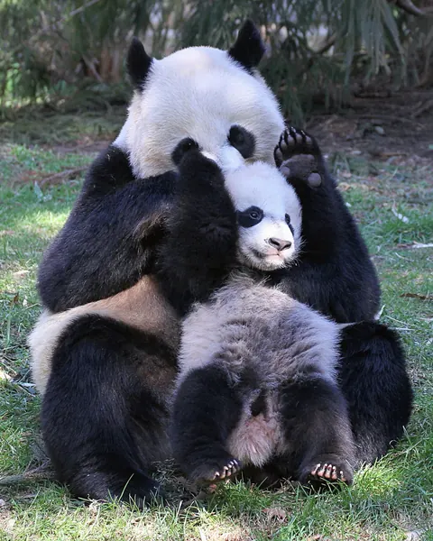

How long is a giant panda pregnancy?
A giant panda pregnancy usually lasts somewhere between about three and six months from mating to birth, but that calendar length is misleading. Most of the stretch is a pause called delayed implantation. Once the embryo restarts and implants, active fetal growth runs for a short, fairly fixed window of about 42 days. That short active phase helps explain why newborn cubs are so tiny.

The headline numbers: 90 to 180 days
Smithsonian's National Zoo reports that panda gestation ranges from about 90 to 180 days, with an average near 135 days. The fertilised egg typically floats freely in the uterus before it implants and resumes development. After implantation, growth continues until birth. The zoo notes that in American black bears the post implantation growth period is about eight weeks, and that panda development time is probably similar. For adult size, habitat and life history, see our giant panda profile.
A larger captive dataset pushes the observed range a little wider. Luo and colleagues analysed 324 breeding events and reported total gestational durations from 71 to 188 days. They argue that most of that spread reflects how long embryonic diapause lasts, not how long the cub grows after implantation (Luo et al. 2025, Animals).
Delayed implantation, confirmed by ultrasound
Delayed implantation, also called embryonic diapause, means the early embryo stops developing for a stretch, then implants later when conditions are right. For years biologists suspected giant pandas did this, because total pregnancy length swung so widely. Hard proof needed imaging.
In 2009, Zhang, Li, Wang and Hull published ultrasound results from 13 pregnancies at the China Conservation and Research Center for the Giant Panda in Reproduction. They confirmed delayed implantation across individuals. The period before a fetus could be seen on ultrasound averaged 107.15 days (standard deviation 19.75), which they treat as the delayed implantation window. Once a fetus was detectable, the remaining time to birth was remarkably similar across mothers: 16.85 days on average (standard deviation 1.34). Fetal detection also lined up tightly with the peak in urinary progesterone and with mammary and vulva swelling.
Birth weight told the same story. When the team controlled for total gestation length, infant birth weight was predicted by the short post fetal detection period, not by how long the whole pregnancy lasted. Delayed implantation therefore buys flexibility in when birth happens, without setting how big the cub will be.
The fixed 42 day active phase
More recent hormone work sharpens the clock after the pause. Wauters and colleagues studied 24 reproductive cycles from six giant pandas (six pregnant, eight pseudopregnant and ten non birth cycles). Writing in Theriogenology Wild in 2023, they reported a fixed active luteal phase of 42 days: six weeks of post diapause development in a true pregnancy. Pregnant cycles showed higher progestogens through most of that phase, higher glucocorticoids near birth, and a clearer drop in fecal output than non pregnant cycles.
A 2025 paper in Scientific Reports by Cools and colleagues describes the same 42 day active luteal phase from blastocyst reactivation to birth of an altricial cub. Before that, corpora lutea stay relatively quiet for a variable stretch of about two to three months while the embryo is thought to pause. A secondary, sharper rise in progesterone marks the start of the active phase. Around the presumed time of implantation, a prostaglandin metabolite called PGFM peaks about three weeks before birth, splitting the active phase into early and late parts. Estrogens and PGFM then climb in the final two weeks, with PGFM surging again near delivery.
Smithsonian reproductive physiologist Janine Brown has described that post surge phase as much more predictable than the waiting game beforehand, lasting roughly 40 to 50 days, which matches the 42 day laboratory figure closely.
Why the wait exists
Delayed implantation is common in bears and is often read as a trait pandas inherited with their ursid ancestry. By parking the embryo, a female can time birth for a season when dens, food and weather favour a helpless cub. Giant pandas do not hibernate, so they cannot hide a winter birth inside a den the way some other bears do; alignment with bamboo seasons and maternal condition still matters. For more on that contrast, see do pandas hibernate? and our behaviour guide.
The short active gestation also helps explain the extreme altriciality of newborn cubs. A cub of only a few ounces is the smallest placental newborn relative to its mother after marsupials, and skeletal work links that small size to a short post implantation pregnancy. We cover that story in why are baby pandas so small?.
Pregnancy versus false pregnancy
Breeding managers cannot rely on behaviour alone. Female giant pandas can show obligatory pseudopregnancy, with hormone patterns and nesting that look a lot like the real thing. Traditional immunoassays struggle early on. Cools and colleagues combined polar metabolomics and steroidomics across six pregnant and seven pseudopregnant cycles and found hundreds of discriminative urinary features, including signals in early luteal stages before the usual diagnostic window. That line of work matters because every wasted month of monitoring costs scarce breeding slots.
Why it matters for conservation
Slow, uncertain reproduction is one reason giant panda numbers recover carefully even when habitat improves. Knowing that the active fetal window is short and fairly fixed, while the pause before it is long and variable, helps zoos plan ultrasounds, hormone sampling and den readiness. In the wild, females still need intact mountain forests and bamboo to raise a cub through months of intensive care. Our conservation overview and are giant pandas still endangered? put those pressures in context.
Frequently asked questions
How long is a giant panda pregnant?
Smithsonian's National Zoo puts total gestation between about 90 and 180 days, with an average near 135 days. The wide range comes from delayed implantation, not from a hugely variable period of fetal growth.
What is delayed implantation in giant pandas?
After fertilisation, the early embryo pauses development and floats in the uterus for weeks or months before it implants. Ultrasound work at the China Conservation and Research Center for the Giant Panda confirmed this pattern (Zhang et al. 2009, Reproduction).
How long does the embryo grow after it implants?
Hormone monitoring of pregnant cycles finds a fixed active luteal phase of 42 days from corpus luteum reactivation to birth, about six weeks of post diapause development (Wauters et al. 2023, Theriogenology Wild; Cools et al. 2025, Scientific Reports).
Why does pregnancy length vary so much?
Most of the variation is in the pause before implantation. A 2025 analysis of 324 captive breeding events reported total gestations from 71 to 188 days, with the spread attributed mainly to embryonic diapause length (Luo et al. 2025, Animals).
Can you tell pregnancy from a false pregnancy by hormones alone?
Not easily early on. Giant pandas also show obligatory pseudopregnancy, so behaviour and many hormone patterns can look similar. Newer metabolomics and steroidomics work is trying to spot true pregnancy signatures earlier (Cools et al. 2025).
Does a longer pregnancy mean a bigger cub?
Not in the way you might expect. Zhang and colleagues found birth weight tracked the short post fetal detection window, not the total length of gestation, which supports the idea that cub growth is set mainly after implantation.
Sources
- Zhang, H., Li, D., Wang, C. and Hull, V. (2009), Delayed implantation in giant pandas: the first comprehensive empirical evidence, Reproduction 138(6): 979 to 986. DOI 10.1530/rep-09-0241
- Wauters, J., Wilson, K. S., Cools, T., Vancsok, C., Bouts, T., Mulot, B., Leclerc, A., Haapakoski, M. et al. (2023), Pregnancy length and health in giant pandas: What can metabolic and urinary endocrine markers unveil?, Theriogenology Wild 3: 100063. DOI 10.1016/j.therwi.2023.100063
- Cools, T., Wilson, K. S., Li, D., Vancsok, C., Mulot, B., Leclerc, A. et al. (2025), Non-invasive giant panda pregnancy and pseudopregnancy biomonitoring by integrated metabolomics and steroidomics, Scientific Reports. DOI 10.1038/s41598-025-19067-7
- Luo, Y., Yang, Z., Zhou, X., Li, D., Lai, L., Zeng, C. et al. (2025), Exploring Captive Giant Panda Reproduction: Maternal and Offspring Factor Correlations from 324 Breeding Events, Animals 15(8): 1182. DOI 10.3390/ani15081182
- Smithsonian's National Zoo and Conservation Biology Institute: Giant panda
Cite this page
APA
PandasWise. (2026, October 16). How long is a giant panda pregnancy? https://pandaswise.com/blog/how-long-is-a-giant-panda-pregnancy.html
MLA
"How long is a giant panda pregnancy?" PandasWise, 16 Oct. 2026, https://pandaswise.com/blog/how-long-is-a-giant-panda-pregnancy.html.
Chicago
PandasWise. "How long is a giant panda pregnancy?" PandasWise. October 16, 2026. https://pandaswise.com/blog/how-long-is-a-giant-panda-pregnancy.html.